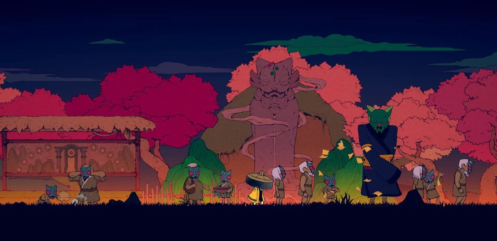
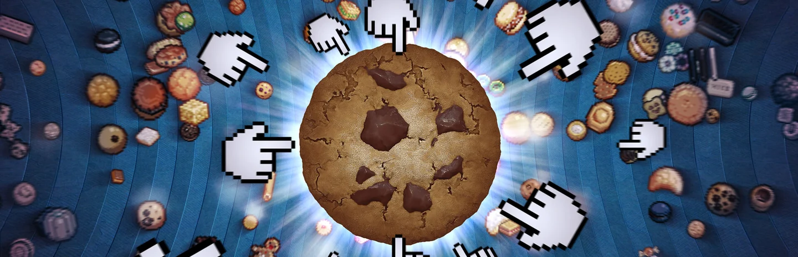

Combate
Nine Sols y el ritmo del combate
Cómo un juego de acción convierte cada intento fallido en una pista para el siguiente combate.
Leer entradaUn blog sobre las decisiones de diseño que dan forma a lo que hacemos cuando jugamos.

Cómo un juego de acción convierte cada intento fallido en una pista para el siguiente combate.
Leer entrada
Los colores, el terreno y la gestión del rancho se combinan para que desviarse del camino merezca la pena.

Una sola acción basta para poner en marcha un sistema de producción que cambia las decisiones del jugador.